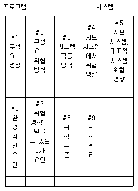
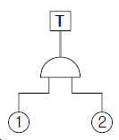
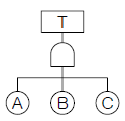
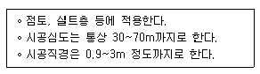

건설안전산업기사 (2015-03-08 기출문제)
1과목: 산업안전관리론
1. 안전관리의 4M 가운데 Media에 관한 내용으로 가장 올바른 것은?
- 인간과 기계를 연결하는 매개체
- 인간과 관리를 연결하는 매개체
- 기계와 관리를 연결하는 매개체
- 인간과 작업환경을 연결하는 매개체
(정답률: 69%)

2. 1000명의 근로자가 주당 45시간씩 연간 50주를 근무하는 A기업에서 질병 및 기타 사유로 인하여 5%의 결근율을 나타내고 있다. 이 기업에서 연간 60건의 재해가 발생하였다면 이 기업의 도수율은 약 얼마인가?
- 25.12
- 26.67
- 28.07
- 51.64
(정답률: 50%)
3. 산업안전보건법령상 안전검사대상 유해ㆍ위험기계에 해당하지 않는 것은?
- 곤돌라
- 전기용접기
- 리프트
- 산업용원심기
(정답률: 55%)
4. 산업안전보건법령상 의무안전인증 대상 보호구에 해당하지 않는 것은?
- 보호복
- 안전장갑
- 방독마스크
- 보안면
(정답률: 63%)
5. O.J.T(On the job Training) 교육의 장점과 가장 거리가 먼 것은?
- 훈련에만 전념할 수 있다.
- 개개인의 업무능력에 적합한 자세한 교육이 가능하다.
- 직장의 실정에 맞게 실제적 훈련이 가능하다.
- 교육을 통해서 상사와 부하간의 의사소통과 신뢰감이 깊게 된다.
(정답률: 70%)
6. Alderfer의 ERG 이론 중 생존(Existence)욕구에 해당되 는 Maslow의 욕구단계는?
- 자아실현의 욕구
- 존경의 욕구
- 사회적 욕구
- 생리적 욕구
(정답률: 74%)
7. 안전관리 조직 중 대규모 사업장에서 가장 이상적인 조직 형태는?
- 직계형 조직
- 직능전문화 조직
- 라인스태프(line-staff)형 조직
- 테스크포스(task-force)조직
(정답률: 83%)
8. 산업안전보건법령상 안전ㆍ보건표지의 색채별 색도기준이 올바르게 연결된 것은? (단, 순서는 색상 명도/채도이며, 색도 기준은 KS에 따른 색의 3속성에 의한 표시방법에 따른다.)
- 빨간색 –5R 4/13
- 노란색 –2.5Y 8/12
- 파란색 –7.5PB 2.5/7.5
- 녹색 –2.5G 4/10
(정답률: 62%)
9. 강의식 교육지도에서 가장 많은 시간이 할당되는 단계는?
- 도입
- 제시
- 적용
- 확인
(정답률: 59%)
10. 과거에 경험하였던 것과 비슷한 상태에 부딪쳤을 때 떠오르는 것을 무엇이라 하는가?
- 재생
- 기명
- 파지
- 재인
(정답률: 76%)
11. 기업조직의 원리 가운데 지시 일원화의 원리를 가장 잘 설명한 것은?
- 지시에 따라 최선을 다해서 주어진 임무나 기능을 수행하는 것
- 책임을 완수하는데 필요한 수단을 상사로부터 위임 받은 것
- 언제나 직속 상사에게서만 지시를 받고 특정 부하직원들에게만 지시하는 것
- 조직의 각 구성원이 가능한 한 가지 특수 직무만을 담당하도록 하는 것
(정답률: 59%)
12. 안전태도교육의 기본과정을 가장 올바르게 나열한 것은?
- 청취한다 → 이해하고 납득한다 → 시범을 보인다 → 평가한다
- 이해하고 납득한다 → 들어본다 → 시범을 보인다 → 평가한다
- 청취한다 → 시범을 보인다 → 이해하고 납득한다 → 평가한다
- 대량발언 → 이해하고 납득한다 → 들어본다 → 평가한다
(정답률: 70%)
13. 무재해운동의 기본이념 3가지에 해당하지 않는 것은?
- 무의 원칙
- 자주 활동의 원칙
- 참가의 원칙
- 선취 해결의 원칙
(정답률: 70%)
14. 적성검사의 유형 중 체력검사에 포함되지 않는 것은?
- 감각기능검사
- 근력검사
- 신경기능검사
- 크루즈 지수(Kruse’s Index)
(정답률: 69%)
15. 안전ㆍ보건교육 및 훈련은 인간행동 변화를 안전하게 유지하는 것이 목적이다. 이러한 행동변화의 전개과정 순서가 알맞은 것은?
- 자극 - 욕구 - 판단 - 행동
- 욕구 - 자극 - 판단 - 행동
- 판단 - 자극 - 욕구 - 행동
- 행동 - 욕구 - 자극 - 판단
(정답률: 63%)
16. 질병에 의한 피로의 방지대책으로 가장 적합한 것은?
- 기계의 사용을 배제한다.
- 작업의 가치를 부여한다.
- 보건상 유해한 작업환경을 개선한다.
- 작업장에서의 부적절한 관계를 배제한다.
(정답률: 68%)
17. 산업재해 발생의 직접원인에 해당하지 않는 것은?
- 안전수칙의 오해
- 물(物)자체의 결함
- 위험 장소의 접근
- 불안전한 속도 조작
(정답률: 56%)
18. 위험예지훈련 기초 4라운드(4R)에 내용으로 옳은 것은?
- 1R : 목표설정
- 2R : 현상파악
- 3R : 대책수립
- 4R : 본질추구
(정답률: 72%)
19. 다음 중 산업안전보건법상 사업 내 안전ㆍ보건교육의 교육과정에 해당하지 않는 것은?
- 특별안전ㆍ보건교육
- 근로자 정기안전ㆍ보건교육
- 관리감독자 정기안전ㆍ보건교육
- 안전관리자 신규 및 보수교육
(정답률: 72%)
20. 사업장의 안전준수 정도를 알아보기 위한 안전평가는 사전평가와 사후평가로 구분되어 지는데 다음 중 사전평가에 해당하는 것은?
- 재해율
- 안전샘플링
- 연천인율
- safe-T-score
(정답률: 57%)
2과목: 인간공학 및 시스템안전공학
21. 조종장치를 3cm 움직였을 때 표시장치의 지침이 5cm 움직였다면 C/R비는?
- 0.25
- 0.6
- 1.5
- 1.7
(정답률: 62%)
22. FT도에서 입력현상이 발생하여 어떤 일정 시간이 지속된 후 출력이 발생하는 것을 나타내는 게이트나 기호로 옳은 것은?
- 위험 지속 기호
- 조합 AND 게이트
- 시간 단축 기호
- 억제 게이트
(정답률: 58%)
23. 시스템에 영향을 미치는 모든 요소의 고장을 형태별로 분석하여 그 영향을 검토하는 시스템안전 분석기법은?
- FMEA
- PHA
- HAZOP
- FTA
(정답률: 49%)
24. 40세 이후 노화에 의한 인체의 시지각 능력 변화로 틀린 것은?
- 근시력 저하
- 휘광에 대한 민감도 저하
- 망막에 이르는 조명량 감소
- 수정체 변색
(정답률: 50%)
25. 인체측정치 응용원칙 중 가장 우선적으로 고려해야 하는 원칙은?
- 조절식 설계
- 최대치 설계
- 최소치 설계
- 평균치 설계
(정답률: 41%)
26. 근골격계 질환을 예방하기 위한 관리적 대책으로 옳은 것은?
- 작업공간 배치
- 작업재료 변경
- 작업순환 배치
- 작업공구 설계
(정답률: 66%)
27. 시스템 수명주기에서 FMEA가 적용되는 단계는?
- 개발단계
- 구상단계
- 생산단계
- 운전단계
(정답률: 38%)
28. 다음 중 음성 인식에서 이해도가 가장 좋은 것은?
- 음소
- 음절
- 단어
- 문장
(정답률: 55%)
29. 일반적으로 연구조사에 사용되는 기준 중 기준척도의 신뢰성이 의미하는 것은?
- 보편성
- 적절성
- 반복성
- 객관성
(정답률: 46%)
30. 안전 설계방법 중 페일세이프 설계(fail-safe design)에 대한 설명으로 가장 적절한 것은?
- 오류가 전혀 발생하지 않도록 설계
- 오류가 발생하기 어렵게 설계
- 오류의 위험을 표시하는 설계
- 오류가 발생하였더라도 피해를 최소화 하는 설계
(정답률: 73%)
31. 동작경제의 원칙에 해당하지 않는 것은?
- 가능하다면 낙하식 운반방법을 사용한다.
- 양손을 동시에 반대 방향으로 움직인다.
- 자연스러운 리듬이 생기지 않도록 동작을 배치한다.
- 양손으로 동시에 작업을 시작하고 동시에 끝낸다.
(정답률: 56%)
32. 고열환경에서 심한 육체노동 후에 탈수와 체내 염분농도 부족으로 근육의 수축이 격렬하게 일어나는 장해는?
- 열경련(heat cramp)
- 열사병(heat stroke)
- 열쇠약(heat prostration)
- 열피로(heat exhaustion)
(정답률: 72%)
33. 표와 관련된 시스템위험분석 기법으로 가장 적합한 것은?

- 예비위험분석(PHA)
- 결함위험분석(FHA)
- 운용위험분석(OHA)
- 사상수분석(ETA)
(정답률: 47%)
34. 인간-기계 시스템 평가에 사용되는 인간기준 척도 중에서 유형이 다른 것은?
- 심박수
- 안락감
- 산소소비량
- 뇌전위(EEG)
(정답률: 62%)
35. 정보를 유리나 차양판에 중첩시켜 나타내는 표시장치는?
- CRT
- LCD
- HUD
- LED
(정답률: 71%)
36. FT도상에서 정상 사상 T의 발생 확률은? (단, 기본사상 ①, ②의 발생 확률은 각각 1×10-2과 2×10-2이다.)

- 2×10-2
- 2×10-4
- 2.98×10-2
- 2.98×10-4
(정답률: 72%)
37. 인체의 피부와 허파로부터 하루에 600g의 수분이 증발될 때 열손실율은 약 얼마인가? (단, 37℃의 물 1g을 증발시키는데 필요한 에너지는 2410J/g이다.)
- 약 15 Watt
- 약 17 Watt
- 약 19 Watt
- 약 21 Watt
(정답률: 44%)
38. 톱사상 T를 일으키는 컷셋에 해당하는 것은?

- {A}
- {A, B}
- {B, C}
- {A, B, C}
(정답률: 73%)
39. 청각신호의 위치를 식별할 때 사용하는 척도는?
- Al(Articulation Index)
- JND(Just Noticeable Difference)
- MAMA(Minimum Audible Movement Angle)
- PNC(Preferred Noise Criteria)
(정답률: 58%)
40. 사후보전에 필요한 수리시간의 평균치를 나타내는 것은?
- MTTF
- MTBF
- MDT
- MTTR
(정답률: 48%)
3과목: 건설시공학
41. 철골공사에서의 용접작업 시 유의사항으로 옳지 않은 것은?
- 용접자세는 하양자세로 하는 것이 좋다.
- 수축량이 작은 부분부터 용접하고 수축량이 큰 부분은 최후에 용접한다.
- 용접 전에 용접 모재 표면의 수분, 슬래그, 도료 등 용접에 지장을 주는 불순물을 제거한다.
- 감전방지를 위해 안전홀더를 사용한다.
(정답률: 70%)
42. 역타공법(top-down method)과 관련된 내용으로 옳지 않은 것은?
- 지하굴착공사장에는 중장비 때문에 급배기환기시설이 필요하다.
- 기둥천공 시 슬라임 처리가 완벽해야 한다.
- 한 현장에 지하연속벽과 강성이 다른 흙막이벽을 병행 조성하는 것이 안전상 유리하다.
- 지하연속벽과 구조체와의 연결철근의 위치가 정확히 유지되어 있어야 한다.
(정답률: 68%)
43. 숏크리트(shotcrete)공정이 필요한 공법은?
- 강재널말뚝 공법
- 엄지말뚝식 흙막이공법
- 지하연속벽 공법
- 소일네일링 공법
(정답률: 53%)
44. 공동도급(Joint Venture)의 장점이 아닌 것은?
- 융자력 증대
- 공기 단축
- 위험 분산
- 기술 확충
(정답률: 64%)
45. 점토지반에 모래를 깔고 그 위에 성토에 의해 하중을 가하면 장기간에 걸쳐 점토 중의 물이 샌드파일을 통하여 지상에 배수되어 지반을 압밀ㆍ강화시키는 공법은?
- 샌드드레인 공법
- 바이브로플로테이션 공법
- 웰포인트 공법
- 그라우팅공법
(정답률: 74%)
46. 굴착토사와 안정액 및 공수내의 혼합물을 드릴 파이프내부를 통해 강제로 역순환시켜 지상으로 배출하는 공법으로 다음과 같은 특징이 있는 현장타설 콘크리트 말뚝공법은?

- 어스드릴공법
- 리버스서큘레이션공법
- 뉴메틱케이슨공법
- 심초공법
(정답률: 73%)
47. 거푸집공사의 부속자재에 대한 설명으로 옳지 않은 것은?
- 폼타이 - 거푸집의 간격을 유지하고 측압에 의해 벌어지는 것을 방지함
- 세퍼레이터 - 거푸집이 오그라드는 것을 방지하고 상호간의 간격을 유지시킴
- 스페이서 - 슬래브와 벽체 등에 배근되는 철근이 거푸집에 밀착되는 것을 방지함
- 인서트 - 바닥판, 보의 중앙부에 매립하여 처짐을 방지함
(정답률: 58%)
48. 콘크리트 타설에 관한 설명 중 옳지 않은 것은?
- 부어넣기는 기둥(벽)→보→슬래브 순으로 한다.
- 한 구획의 타설이 시작되면 콘크리트가 일체가 되도록 연속적으로 부어 넣는다.
- 비비는 장소 또는 플로어호퍼에서 가까운 곳부터 부어 넣는다.
- 콘크리트의 자유낙하 높이는 콘크리트가 분리되지 않도록 가능한 한 낮게 타설한다.
(정답률: 59%)
49. 토공사에서 토량 변화율 L=1.3, C=0.8인 사질토를 가지고 성토하여 다진 후에 40,000m3를 만들기 위한 굴착 및 운반 토량은?
- 굴착토량 50,000m3 , 운반토량 65,000m3
- 굴착토량 65,000m3 , 운반토량 70,000m3
- 굴착토량 70,000m3 , 운반토량 75,000m3
- 굴착토량 75,000m3 , 운반토량 80,000m3
(정답률: 41%)
50. 말뚝박기 기계인 디젤해머(diesel hammer)의 대한 설명 으로 옳지 않은 것은?
- 박는 속도가 빠르다.
- 타격음이 작다.
- 타격에너지가 크다.
- 운전이 용이하다.
(정답률: 79%)
51. 건설공사 시공방식 중 직영공사의 장점에 속하지 않는 것은?
- 영리를 도외시한 확실성 있는 공사를 할 수 있다.
- 임기응변의 처리가 가능하다.
- 공사기일이 단축된다.
- 발주, 계약 등의 수속이 절감된다.
(정답률: 61%)
52. T.S Bolt를 체결작업할 때의 유의사항으로 옳지 않은 것은?
- 부재와 부재의 접합면은 완전히 밀착되어야 한다.
- 용접과 볼트를 병행이음 할 경우에는 용접 완료 후에 체결한다.
- 볼트의 표면온도가 250℃ 이상일 경우 기계적 성질에 변할 수 있으므로 볼트 주변에서 용접 시 주의한다.
- 1차 조임을 한 볼트의 본 체결은 2일 정도의 시간적 여유를 두고 나서 한다.
(정답률: 60%)
53. 토공사용 장비에 해당되지 않는 것은?
- 불도저(Bulldozer)
- 트럭 크레인(Truck crane)
- 그레이더(Grader)
- 스크레이퍼(Scraper)
(정답률: 54%)
54. 고력볼트 접합에서 축부가 굵게 되어 있어 볼트 구멍에 빈틈이 남지 않도록 고안된 볼트는?
- TC볼트
- PI볼트
- 그립볼트
- 지압형 고장력볼트
(정답률: 68%)
55. 조강포틀랜드시멘트를 사용한 기둥에서 거푸집널 존치 기간 중의 평균기온이 20℃ 이상인 경우 콘크리트의 재령이 최소 며칠 이상 경과하면 압축강도시험을 하지 않고 거푸집을 떼어낼 수 있는가?
- 2일
- 3일
- 4일
- 6일
(정답률: 65%)
56. 재료분리를 일으키지 않고 타설, 다지기 등의 작업이 용이하게 될 수 있는 정도를 나타내는 굳지 않은 콘크리트의 성질을 말하는 것은?
- 워커빌리티
- 피니셔빌리티
- 펌퍼빌리티
- 플라스티시티
(정답률: 71%)
57. 네트워크 공정표에서 얻을 수 있는 정보가 아닌 것은?
- 작업방법과 능률의 파악
- 크리티컬 패스(critiacal path)와 중점작업의 파악
- 작업순서와 상호관계의 파악
- 변경이 있을 때 전체에 대한 영향의 파악
(정답률: 55%)
58. 지반 개량 공법에 해당되지 않는 것은?
- 다짐법
- 탈수법
- 치환법
- 에일랜드 컷 공법
(정답률: 63%)
59. 돌공사에서 건식공법의 장점이 아닌 것은?
- 동결, 백화현상이 없다.
- 고층건물에 유리하다.
- 겨울철공사가 가능하다.
- 구조체와 긴결이 매우 쉬운 편이다.
(정답률: 53%)
60. 착공 단계에서 공사 계획은 각 공사마다 고유의 여건에 맞게 수립되어야 한다. 공사 계획의 주요 내용이 아닌 것은?
- 공정표의 작성
- 실행예산의 편성
- 원척도의 작성
- 현장원의 편성
(정답률: 55%)
4과목: 건설재료학
61. 각종 금속의 성질 및 사용법에 관한 설명으로 틀린 것은?
- 아연판은 철과 접촉하면 침식되므로 아연못을 사용한다.
- 동은 대기 중에서 내구성이 있으나 암모니아에 침식 된다.
- 연은 산과 알칼리에 강하므로 콘크리트에 직접매설 하여도 침식이 적다.
- 동은 전연성이 풍부하므로 가공하기 쉽다.
(정답률: 62%)
62. 콘크리트용 골재에 요구되는 성질이 아닌 것은?
- 콘크리트의 유동성을 확보할 수 있도록 정방형의 입형과 적절한 입도일 것
- 물리적, 화학적으로 안정성을 가질 것
- 시멘트 페이스트이 강도보다 강할 것
- 유해한 물질을 함유하지 않을 것
(정답률: 41%)
63. 도료의 사용 용도에 관한 설명으로 틀린 것은?
- 아스팔트 페인트 : 방수, 방청, 전기절연용으로 사용
- 유성 바니쉬 : 내후성이 우수하여 외부용으로 사용
- 징크로메이트 : 알루미늄판이나 아연철판의 초벌용으로 사용
- 합성수지페인트 : 콘크리트나 플라스터면에 사용
(정답률: 57%)
64. 플라스틱재료의 일반적인 성질에 대한 설명 중 옳은 것은?
- 산이나 알칼리, 염류 등에 대한 저항성이 약하다.
- 전기저항성이 불량하여 절연재료로 사용할 수 없다.
- 내수성 및 내투습성이 좋지 않아 방수피막제 등으로 사용이 불가능하다.
- 상호간 계면 접착이 잘되며 금속, 콘크리트, 목재, 유리 등 다른 재료에도 잘 부착된다.
(정답률: 52%)
65. 아치벽돌, 원형벽체를 쌓는데 쓰이는 원형벽돌과 같이 형상, 치수가 규격에서 정한 바와 다른 벽돌로서 특수한 구조체에 사용될 목적으로 제조되는 것은?
- 오지벽돌
- 이형벽돌
- 포도벽돌
- 다공벽돌
(정답률: 70%)
66. 각종 접착제에 관한 설명으로 틀린 것은?
- 요소수지 접착제는 요소와 포름알데히드를 사용하여 만들며 목공용에 적당하다.
- 멜라민수지 접착제는 내수성이 우수하여 금속, 고무, 유리 등에 사용한다.
- 실리콘수지 접착제는 내수성이 대단히 크고 전기절연성도 우수하여 유리섬유판, 가죽 등의 접합에 사용된다.
- 에폭시수지 접착제는 내수성, 내약품성, 전기절연성이 모두 우수한 만능형 접착제이다.
(정답률: 46%)
67. 콘크리트의 인장강도는 압축강도의 대략 얼마 정도인가?
- 동일하다.
- 약 1/3 ~ 1/5
- 약 1/10 ~ 1/13
- 약 1/30 ~ 1/35
(정답률: 66%)
68. 양모, 마사, 폐지 등을 원료로 하여 만든 원지에 연질의 스트레이트 아스팔트를 가열ㆍ용융시켜 충분히 흡수시킨 후 회전로에서 건조와 함께 두께를 조정하여 롤형으로 만든 것은?
- 아스팔트 루핑
- 알루미늄 루핑
- 아스팔트 펠트
- 개량 아스팔트 루핑
(정답률: 58%)
69. 점토제품에 대한 설명으로 틀린 것은?
- 습식제법이 건식제법에 비해 타일의 치수정밀도가 좋다.
- 도기질 제품으로 내장 타일이 있다.
- 석기질 제품으로 클링커타일이 있다.
- 외장타일은 습식제법으로 제조된다.
(정답률: 42%)
70. 납(Pb)에 대한 설명 중 틀린 것은?
- 방사선의 투과도가 낮아 건축에서 방사선 차폐용 벽체에 이용된다.
- 비중이 11.4로 아주 크고 연질이며 전ㆍ연성이 크다.
- 콘크리트 중에 매입할 경우 적당히 표면을 피복할 필요가 있다.
- 증류수에 용해가 되지 않으며, 인체에도 무해하여 주로 수도관에 사용된다.
(정답률: 70%)
71. 다음 재료 중 비강도(比强度)가 가장 높은 것은?
- 목재
- 콘크리트
- 강재
- 석재
(정답률: 60%)
72. 시멘트의 수화반응속도에 영향을 주는 요인으로 가장 거리가 먼 것은?
- 시멘트의 화학성분
- 골재의 강도
- 분말도
- 혼화제
(정답률: 68%)
73. 보통 콘크리트용 쇄석의 원석으로 가장 부적당한 것은?
- 현무암
- 안산암
- 화강암
- 응회암
(정답률: 48%)
74. 감람석 또는 섬록암이 변질된 것으로, 색조는 암녹색 바탕에 흑백색의 아름다운 무늬가 있고, 경질이나 풍화성이 있어 외벽보다는 실내장식용으로 사용되는 석재는?
- 사문암
- 대리석
- 트래버틴
- 점판암
(정답률: 42%)
75. 폴리에스테르수지에 관한 설명 중 틀린 것은?
- 전기절연성이 우수하다.
- 도료, 파이프 등에 사용된다.
- 건축용으로는 판상제품으로 주로 사용된다.
- 불포화 폴리에스테르수지는 열가소성 수지이다.
(정답률: 55%)
76. 다음 중 목재의 결정이 아닌 것은?
- 옹이
- 도관
- 껍질박이
- 지선
(정답률: 51%)
77. 철근콘크리트 구조용 골재로 해사를 사용할 경우 우선 조치하여야 할 사항은?
- 해사를 충분히 건조시킨 후 사용한다.
- 물-시멘트비를 증가시킨다.
- 조골재를 많이 넣어 잔골재율을 낮춘다.
- 토사를 충분히 물에 씻어 사용한다.
(정답률: 58%)
78. 대기 중의 이산화탄소와 반응하여 경화하는 기경성 미장재료는?
- 돌로마이트 플라스터
- 시멘트 모르타르
- 순석고 플라스터
- 혼합석고 플라스터
(정답률: 68%)
79. 콘크리트의 워커빌리티(workability)에 영향을 주는 요소가 아닌 것은?
- 시멘트의 성질
- 공기량
- 혼화재료
- 풍향
(정답률: 69%)
80. 콘크리트의 혼화재료와 그 작용의 조합으로 틀린 것은?
- 염화칼슘 - 응결 경화 촉진
- 포졸란 - 시공연도 증진
- 알루미늄 분말 - 발포, 경량
- 슬래그 분말 - 초기강도 증진
(정답률: 43%)
5과목: 건설안전기술
81. 재해발생과 관련된 건설공사의 주요 특징으로 틀린 것은?
- 재해 강도가 높다.
- 추락재해의 비중이 높다.
- 근로자의 직종이 매우 단순하다.
- 작업 환경이 다양하다.
(정답률: 66%)
82. 다음 건설기계의 명칭과 각 용도가 옳게 연결된 것은?
- 드래그라인 - 암반굴착
- 드래그쇼벨 - 흙 운반작업
- 크램쉘 - 정지작업
- 파워쇼벨 - 지반면보다 높은 곳의 흙파기
(정답률: 64%)
83. 흙의 동상방지 대책으로 틀린 것은?
- 동결되지 않는 흙으로 치환하는 방법
- 흙속의 단열재료를 매입하는 방법
- 지표의 흙을 화학약품으로 처리하는 방법
- 세립토층을 설치하여 모관수의 상승을 촉진시키는 방법
(정답률: 60%)
84. 콘크리트 타설작업을 하는 경우의 준수사항으로 틀린 것은?
- 콘크리트 타설작업 중 이상이 있으면 작업을 중지하고 근로자를 대피시킬 것
- 콘크리트를 타설하는 경우에는 편심을 유발하여 콘크리트를 거푸집 내에 밀실하게 채울 것
- 설계도서상의 콘크리트 양생기간을 준수하여 거푸집 동바리 등을 해체할 것
- 콘크리트 타설작업 시 거푸집 붕괴의 위험이 발생할 우려가 있으면 충분히 보강조치를 할 것
(정답률: 67%)
85. PC(Precast Concrete)조립 시 안전대책으로 틀린 것은?
- 신호수를 지정한다.
- 인양 PC부재 아래에 근로자 출입을 금지한다.
- 크레인에 PC부재를 달아 올린 채 주행한다.
- 운전자는 PC부재를 달아 올린 채 운전대에서 이탈을 금지한다.
(정답률: 72%)
86. 낙하ㆍ비래 재해 방지설비에 대한 설명으로 틀린 것은?
- 투하설비는 높이 10m 이상 되는 장소에서만 사용한다.
- 투하설비의 이음부는 충분히 겹쳐 설치한다.
- 투하입구 부근에는 적정한 낙하방지설비를 설치한다.
- 물체를 투하시에는 감시인을 배치한다.
(정답률: 58%)
87. 암반사면의 파괴 형태가 아닌 것은?
- 평면파괴
- 압축파괴
- 쐐기파괴
- 전도파괴
(정답률: 32%)
88. 토사붕괴의 내적 원인에 해당하는 것은?
- 토석의 강도 저하
- 절토 및 성토 높이의 증가
- 사면법면의 경사 및 기울기 증가
- 지표수 및 지하수의 침투에 의한 토사 중량 증가
(정답률: 57%)
89. 시스템 비계를 사용하여 비계를 구성하는 경우에 준수하여야 할 기준으로 틀린 것은?
- 수직재ㆍ수평재ㆍ가새재를 견고하게 연결하는 구조가 되도록 할 것
- 비계 말단의 수직재와 받침철물은 밀착되도록 설치하고, 수직재와 받침철물의 연결부의 겹침길이는 받침 철물 전체길의 4분의 1 이상이 되도록 할 것
- 수평재는 수직재와 직각으로 설치하여야 하며, 체결 후 흔들림이 없도록 견고하게 설치할 것
- 수직재와 수직재의 연결철물은 이탈되지 않도록 견고한구조로 할 것
(정답률: 66%)
90. 양중기의 와이어로프 등 달기구의 안전계수 기준으로옳은 것은? (단, 화물의 하중을 직접 지지하는 달기와이어 로프 또는 달기체인의 경우)
- 3 이상
- 4 이상
- 5 이상
- 6 이상
(정답률: 62%)
91. 철골공사 작업 중 작업을 중지해야 하는 기후조건의 기준으로 옳은 것은?
- 풍속:10m/sec 이상, 강우량:1mm/h 이상
- 풍속:5m/sec 이상, 강우량:1mm/h 이상
- 풍속:10m/sec 이상, 강우량:2mm/h 이상
- 풍속:5m/sec 이상, 강우량:2mm/h 이상
(정답률: 67%)
92. 안전난간 설치시 발끝막이판은 바닥면으로부터 최소 얼마 이상의 높이를 유지해야 하는가?
- 5cm 이상
- 10cm 이상
- 15cm 이상
- 20cm 이상
(정답률: 52%)
93. 개착식 굴착공사(Open cut)에서 설치하는 계측기기와 거리가 먼 것은?
- 수위계
- 경사계
- 응력계
- 내공변위계
(정답률: 54%)
94. 철근 콘크리트 공사에서 슬래브에 대하여 거푸집동바리를 설치할 때 고려해야 할 사항으로 가장 거리가 먼 것은?
- 철근콘크리트의 고정하중
- 타설시의 충격하중
- 콘크리트의 측압에 의한 하중
- 작업인원과 장비에 의한 하중
(정답률: 57%)
95. 강관비계의 구조에서 비계기둥 간의 적재하중 기준으로 옳은 것은?
- 200kg 이하
- 300kg 이하
- 400kg 이하
- 500kg 이하
(정답률: 57%)
96. 강관비계를 설치하는 경우 첫 번째 띠장의 설치 기준은?
- 지상으로부터 1m 이하
- 지상으로부터 2m 이하
- 지상으로부터 3m 이하
- 지상으로부터 4m 이하
(정답률: 62%)
97. 굴착작업에 있어서 지반의 붕괴 또는 토석의 낙하에 의하여 근로자에게 위험을 미칠 우려가 있는 경우에 사전에 필요한 조치로 거리가 먼 것은?
- 인화성 가스의 농도 측정
- 방호망의 설치
- 흙막이 지보공의 설치
- 근로자의 출입금지 조치
(정답률: 66%)
98. 달비계 또는 높이 5m 이상의 비계를 조립ㆍ해체하거나 변경하는 작업 시 준수사항으로 틀린 것은?
- 근로자가 관리감독자의 지휘에 따라 작업하도록 할 것
- 비, 눈, 그 밖의 기상상태의 불안정으로 날씨가 몹시 나쁜 경우에는 그 작업을 중지시킬 것
- 비계재료의 연결ㆍ해체작업을 하는 경우에는 폭 20cm 이상의 발판을 설치할 것
- 강관비계 또는 통나무비계를 조립하는 경우 외줄로 구성하는 것을 원칙으로 할 것
(정답률: 52%)
99. 비계의 높이가 2m 이상인 작업장소에 설치하는 작업발판의 최소폭 기준은? (단, 달비계, 달대비계 및 말비계는 제외)
- 30cm 이상
- 40cm 이상
- 50cm 이상
- 60cm 이상
(정답률: 58%)
100. 철골구조물의 건립 순서를 계획할 때 일반적인 주의사항으로 틀린 것은?
- 현장건립 순서와 공장제작 순서를 일치시킨다.
- 건립기계의 작업반경과 진행방향을 고려하여 조립 순서를 결정한다.
- 건립 중 가볼트 체결기간을 가급적 길게 하여 안정을 기한다.
- 연속기둥 설치시 기둥을 2개 세우면 기둥 사이의 보도 동시에 설치하도록 한다.
(정답률: 57%)